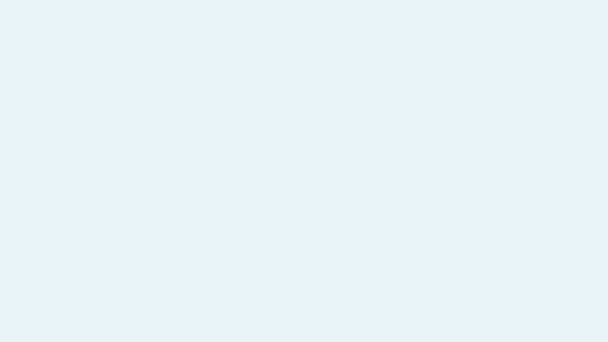

Light Glass and Night Ride on KDE and Omarchy. Sunrise to sunset — desktop, terminal, and editors, unified.
git clone https://github.com/matt-shearing/oneqode-kde-themes.git
cd oneqode-kde-themes && ./oneqode
Toggle the switch above to preview each theme live on this page.

Glass-inspired with ice cyan accents. Clean, airy, and comfortable for daytime work.
Synthwave-inspired with neon magenta and cyan accents. Bold and immersive for nighttime coding.
20+ components styled cohesively. The installer handles it all.
KDE look-and-feel or Omarchy themes — same Light Glass / Night Ride palettes
Klassy presets with custom button layout, transparency, and corner radius
Ghostty, Herdr, and Grok Build — plus Konsole/Yakuake on KDE
Browser chrome and internal pages via userChrome/userContent CSS with auto light/dark
Accent colors, scrollbars, and libadwaita integration. Auto-updates via KDE color sync
Zed (follows system), Obsidian, and Typora themes
Sunrise/sunset on both desktops, from one shared location file
SDDM on KDE; Omarchy uses the same wallpapers for the desktop background
Interactive TUI installer. Detects KDE or Omarchy and installs the matching half.
git clone https://github.com/matt-shearing/oneqode-kde-themes.git
cd oneqode-kde-themes && ./oneqode
All changes take full effect after re-login.
Optional: install gum (yay -S gum) for a prettier TUI experience.